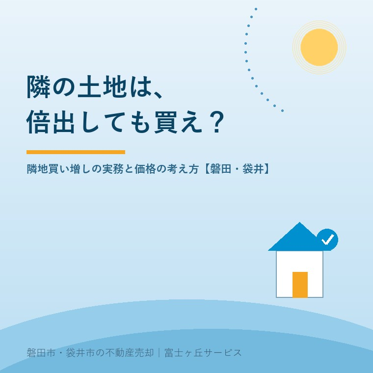

2026年8月5日｜カテゴリ：土地取引・売却戦略

この記事の要点
Q. 隣の空き地が売りに出そう。「隣の土地は倍出しても買え」と言うけれど、本当？
A. 「倍」は言葉のあやですが、隣地にはあなたにしか生まれない価値があるのは本当です。形の悪さや接道の弱点を解消できる唯一の土地だからです。そして裏を返せば、売る側にとっても「一番高く買ってくれる可能性があるのは隣人」。売り出す前にまず隣に声をかけるのは、不動産実務の鉄則です。磐田市・袋井市・森町では、介護施設の運営から不動産事業を始めた富士ヶ丘サービスのような地域密着の会社が、角の立たない打診からお手伝いします。
不動産の世界には「隣の土地は倍出しても買え」という古い格言があります。分筆売却の記事では広い土地を「分けて売る」話をしましたが、今日はその裏返し──隣と「合わせて」価値を作る話です。買う側と売る側、両方の目線で解説します。
普通、土地の価値は面積に比例します。ところが隣地の買い増しでは、合わせた瞬間に「単なる合計」を超えることがあります。理由は、土地の弱点が消えるからです。
| ビフォー | 隣地を買うと |
|---|---|
| 間口が狭い旗竿地 | 間口が広がり、普通の整形地に。資産価値が一段変わる |
| 道路に2m接しておらず、建て替えに難あり | 接道が確保され、建て替え可能な土地になる |
| 駐車場が取れない狭小地 | 車2台の駐車場が確保でき、この地域で選ばれる家になる |
| 中途半端な広さ | 建て替え・増築・庭・家庭菜園の自由度が生まれる |
ポイントは、この価値の上乗せ分は隣に住むあなたにしか発生しないということ。第三者にとってはただの土地でも、あなたにとっては自宅の弱点を治す「特効薬」なのです。だから相場より多少高くても合理的な買い物になり得る──これが格言の正体です。もちろん「倍」を真に受ける必要はありません。
今度は売る側です。エリア記事で書いたとおり、形の悪い土地・狭い土地・接道の弱い土地は、市場では苦戦します。ところが、そういう土地ほど隣人にとっては一番価値がある。旗竿地の竿の部分も、無道路地も、隣から見れば自分の土地を完成させるピースだからです。
だから当社は、売りにくい条件の土地こそ、売り出し前に「隣接地のご所有者への打診」をご提案します。メリットは価格だけではありません。
打診は当社が代行します。「お隣さんにお金の話を切り出すのは気が引ける」──その気まずさを引き受けるのも、地域の不動産屋の仕事です。
この地域の旧集落は、代替わりを重ねた細長い敷地、共有の通路、入り組んだ境界──いわば隣どうしのパズルでできています。単独では売りにくい土地も、隣と組み合わされば、車2台置ける立派な宅地に生まれ変わる。実際、当社が扱う「売りにくい実家」の出口として、隣地への売却は決して珍しくない、現実的な選択肢です。
買いたい方も、売りたい方も、まずは自分の土地と周囲の位置関係を図面で見るところから。ふじがおか実家カルテでは、公図と登記情報から敷地の形・接道・隣接地の状況を整理し、「隣に打診する価値があるか」までお伝えします。
富士ヶ丘サービスは、磐田市・袋井市に特化した地域密着の会社として、ご近所との関係を壊さない打診・交渉をお手伝いしています。「隣の土地を買いたい」「隣に売れないか聞いてみたい」──どちらのご相談も実家じまい相談室からどうぞ。
ふじがおか実家カルテ｜「隣に打診する価値があるか」の確認に
敷地の形・接道・隣接地との関係。まず公図から1冊に。
登記情報と公図・固定資産税通知書から、敷地の弱点と隣接地の状況を宅建士が整理し、売り方・買い方の選択肢をお渡しします。
本記事は2026年8月5日時点の情報と、当社の営業経験に基づく実務上の考え方をまとめたものです。隣地との取引は境界・価格・関係性への配慮が特に重要です。個別のご相談は当社までどうぞ。

この記事を書いた人：大石浩之（宅地建物取引士）
磐田市・袋井市・森町で「介護×相続×空き家」に特化した不動産売却支援を行う富士ヶ丘サービスの代表取締役・宅地建物取引士。介護施設の運営から不動産事業を始めた経験をもとに、売主とご家族が困らない売却を一件ずつお手伝いしています。プロフィール
磐田市・袋井市・森町の実家じまい・相続空き家相談
固定資産税通知書だけでも相談できます
住所があいまいでも、通知書や写真から名義・道路・農地・残置物の確認順を整理します。カルテ申込またはLINEで状況を送ってください。
富士ヶ丘サービス株式会社／静岡県磐田市見付5789番地1／TEL:0538-31-3308／静岡県知事 (2) 第14083号／代表取締役・宅地建物取引士 大石 浩之